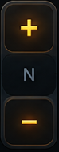

Game tùy chỉnhChọn game hoặc bật nhận diện tự động.
Chưa kết nối— ms
AUTO
Kết nối Receiver trên máy tính để bắt đầu.
VÔ-LĂNG
HỘP SỐAT
—
N

BÀN ĐẠPINPUT
CÔN
PHANH
GA
THIẾT LẬP RECEIVER
Profile & điều khiển
Game & chế độ lái
Chưa nhận diện game.
Cảm giác điều khiển
💡 Đồng bộ vô-lăng 1:1 với game: Chỉnh Deadzone = 0 và Độ phi tuyến tính (Non-linearity) = 0 trong cài đặt Controls của game (ETS2 / Forza / BeamNG) để bánh lái trong game xoay đồng bộ chính xác theo điện thoại.
Ánh xạ chức năng
Ánh xạ phím chỉ gửi khi đúng game đang ở cửa sổ chính. Với vJoy, gán nút tương ứng trong game.
Kết nối bằng cáp USB
Cắm cáp dữ liệu điện thoại vào máy tính.
Android: bật USB tethering. iPhone: bật Personal Hotspot và tin cậy máy tính.
Mở địa chỉ Receiver ứng với adapter USB bên dưới.
Đường truyền chưa được xác minh.
USB riêng không dùng tethering chưa được triển khai.